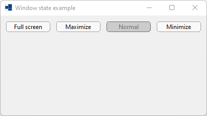
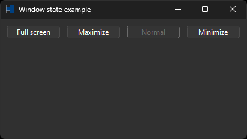
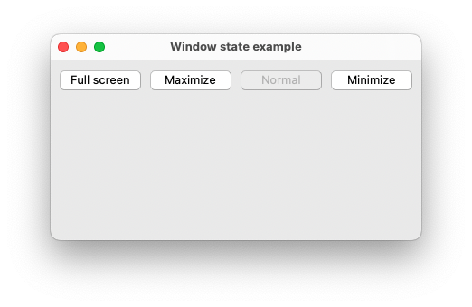
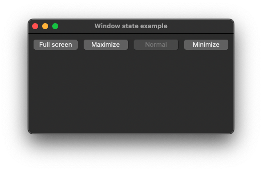
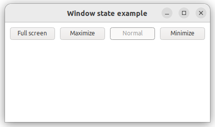
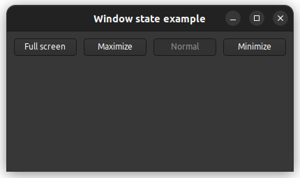

|
xtd
0.2.0
|
Loading...
Searching...
No Matches
form_window_state.cpp
demonstrates the use of xtd::forms::form window state.
- Windows
- 

- macOS
- 

- Gnome
- 

#define TRACE
#include <xtd/forms/application>
#include <xtd/forms/button>
#include <xtd/forms/form>
#include <xtd/ctrace>
using namespace xtd;
using namespace xtd::forms;
public:
form1() {
*this << button_full_screen << button_maximize << button_minimize << button_normal;
text("Window state example");
resize += [&] {
button_full_screen.enabled(window_state() != form_window_state::full_screen&& window_state() != form_window_state::maximized);
button_maximize.enabled(window_state() != form_window_state::maximized&& window_state() != form_window_state::full_screen);
button_normal.enabled(window_state() != form_window_state::normal);
button_minimize.enabled(window_state() != form_window_state::minimized&& window_state() != form_window_state::full_screen);
ctrace << ustring::format("resize: {}, {}", size(), window_state()) << std::endl;
};
client_size({410, 200});
window_state(form_window_state::maximized);
button_full_screen.location({10, 10});
button_full_screen.text("Full screen");
button_full_screen.width(90);
button_full_screen.click += [&] {
window_state(form_window_state::full_screen);
};
button_maximize.location({110, 10});
button_maximize.text("Maximize");
button_maximize.width(90);
button_maximize.click += [&] {
window_state(form_window_state::maximized);
};
button_normal.location({210, 10});
button_normal.text("Normal");
button_normal.width(90);
button_normal.click += [&] {
window_state(form_window_state::normal);
};
button_minimize.location({310, 10});
button_minimize.text("Minimize");
button_minimize.width(90);
button_minimize.click += [&] {
window_state(form_window_state::minimized);
};
}
private:
button button_full_screen;
button button_maximize;
button button_normal;
button button_minimize;
};
auto main() -> int {
application::run(form1 {});
}
Represents a window or dialog box that makes up an application's user interface.
Definition form.h:52
The xtd::forms namespace contains classes for creating Windows-based applications that take full adva...
Definition xtd_about_box.h:12
The xtd namespace contains all fundamental classes to access Hardware, Os, System,...
Definition xtd_about_box.h:10
Generated on Tue May 28 2024 20:55:28 for xtd by Gammasoft. All rights reserved.